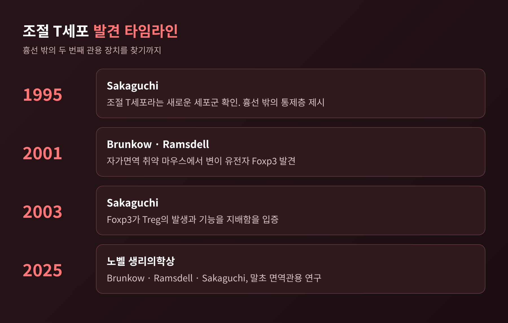
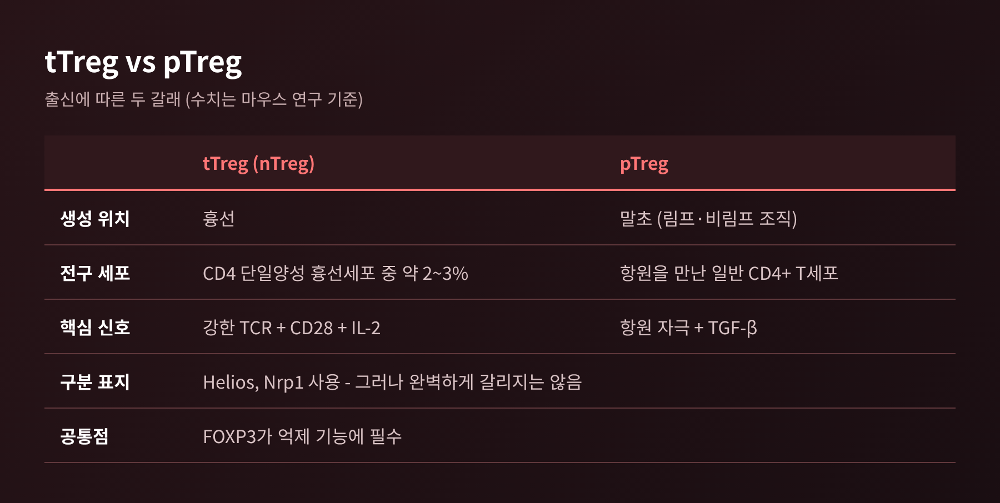
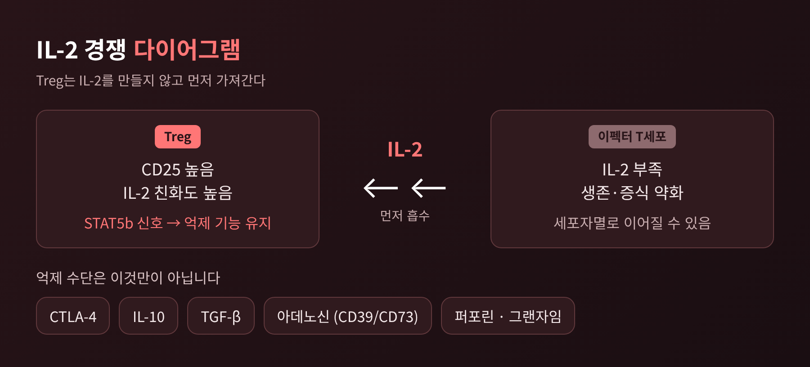
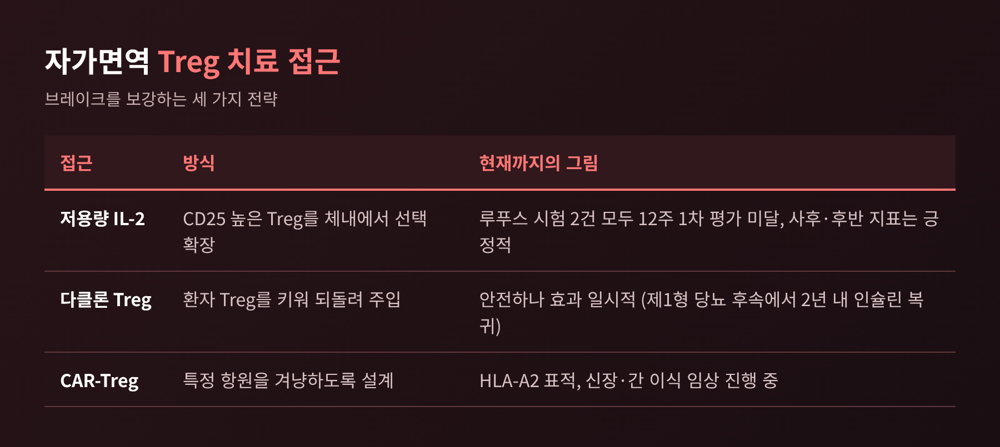
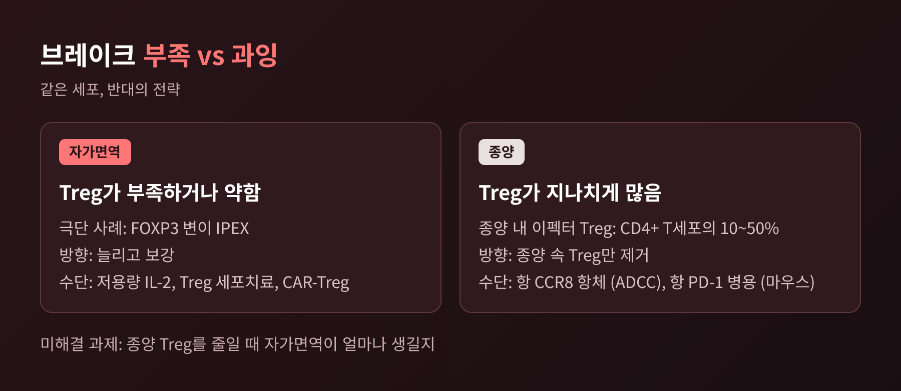

조절 T세포와 FOXP3 원리, 면역계의 브레이크는 어떻게 작동할까

오늘은 조절 T세포(Treg)와 FOXP3에 대해 이야기해 보려 합니다.
면역계에는 액셀만 있는 것이 아니라, 반응을 눌러 주는 세포 집단이 따로 있습니다.
이 세포가 어떻게 만들어지고, 무엇에 기대어 살아가며, 자가면역과 암에서 왜 정반대의 얼굴을 보이는지 차례로 정리해 보겠습니다.
■ 한눈에 보는 핵심
- 조절 T세포는 FOXP3라는 유전자를 정체성의 열쇠로 삼는 억제 전담 T세포입니다.
- 대부분은 흉선에서 만들어지고(tTreg), 일부는 말초에서 일반 T세포가 전환되어 생깁니다(pTreg).
- Treg는 IL-2를 스스로 만들지 않고 받아서 삽니다. 이 의존성이 치료의 손잡이가 됩니다.
- 자가면역에서는 브레이크가 모자라 문제이고, 종양에서는 브레이크가 과해서 문제입니다.
■ 흉선만으로는 설명되지 않던 관용
예전에는 자기 몸을 공격하는 T세포를 흉선에서 제거하면 관용이 끝난다고 보았습니다.
지금은 그 설명이 절반뿐이라는 것이 정설입니다.
1995년 사카구치 시몬(Shimon Sakaguchi)은 조절 T세포라는 새로운 세포군을 확인했습니다. 흉선 밖에도 통제층이 하나 더 있다는 뜻이었습니다.
2001년에는 브런코(Mary Brunkow)와 램스델(Fred Ramsdell)이 자가면역에 취약한 마우스에서 변이 유전자를 찾아 Foxp3라고 이름 붙였습니다.
2003년에 사카구치가 Foxp3가 Treg의 발생과 기능을 지배한다는 점을 보였고, 세 사람은 2025년 노벨 생리의학상을 함께 받았습니다.

■ FOXP3 하나가 무너지면 벌어지는 일
FOXP3는 431개 아미노산으로 이루어진 단백질로, Treg의 정체성과 억제 기능에 꼭 필요합니다.
이 유전자가 고장 나면 어떻게 될까요. 사람에게서는 IPEX 증후군이 나타납니다.
IPEX는 공격적인 자가면역과 이른 사망을 특징으로 하는 희귀 질환입니다.
흥미로운 점이 있습니다. 높은 IgE를 빼면 면역결핍을 시사하는 검사 소견이 뚜렷하지 않습니다.
면역이 약해서가 아니라, 브레이크가 없어서 생기는 병이라는 뜻입니다.
2002년 보고에서 검사한 환자 14명 중 13명에게서 FOXP3 변이가 확인되었습니다.
장기 면역억제제는 일시적 이득만 주었고, 골수이식으로 관해에 이른 예가 있었으나 장기 결과는 불확실하다고 정리되었습니다.
사람 말초혈액 CD4+ T세포의 약 5~10%가 이런 자연 발생 Treg로 알려져 있습니다.
■ 흉선 유래 Treg와 말초 유도 Treg
Treg는 출신에 따라 둘로 나뉩니다.
- tTreg(nTreg): 흉선에서 발달합니다. 마우스 연구 기준으로 CD4 단일양성 흉선세포의 약 2~3%입니다.
- pTreg: 말초에서 항원 자극을 받은 일반 CD4+ T세포가 전환된 세포입니다. TGF-β가 중요한 역할을 합니다.
두 집단을 구분하는 표지로 Helios와 Nrp1이 쓰입니다. 다만 항상 깨끗하게 갈리지는 않아서, 단일 표지로 확정하기는 어렵다는 것이 리뷰들의 입장입니다.

■ IL-2를 만들지 못하는 세포의 생존법
Treg의 가장 독특한 성질은 IL-2에 대한 의존입니다.
Treg는 IL-2 수용체 알파 쇄인 CD25를 높게 발현합니다. 그래서 같은 IL-2를 두고 다른 T세포보다 유리하게 경쟁합니다.
이펙터 T세포가 IL-2를 얻지 못하면 사이토카인 결핍으로 약해지거나 세포자멸로 향할 수 있습니다.
IL-2 신호는 STAT5b를 거쳐 Treg의 억제 기능을 유지합니다.
발달 단계에서도 같은 원리가 보입니다. 마우스에서 IL-2 또는 IL-2 수용체 알파가 없으면 Foxp3+ Treg가 약 절반만 남고, 수용체 베타가 없으면 성숙 Treg가 거의 사라집니다.
IL-2 소비는 억제 수단의 하나일 뿐입니다. Treg는 CTLA-4로 수지상세포를 관용 쪽으로 돌리고, IL-10과 TGF-β를 분비하며, CD39/CD73을 통한 아데노신 생성이나 퍼포린·그랜자임 같은 수단도 씁니다.

■ 정체성을 지키는 일, 그리고 흔들릴 때
Treg가 Treg로 남으려면 FOXP3 발현이 안정적으로 유지되어야 합니다.
이 안정성의 핵심은 FOXP3 유전자 조절부위 CNS2(TSDR이라고도 부릅니다)의 탈메틸화입니다. 일반 T세포에서는 이 부위가 거의 메틸화되어 있지만, 성숙 Treg에서는 열려 있습니다.
탈메틸화가 먼저 일어나고, 그다음 FOXP3 자신이 발현을 강화하는 두 단계로 안정화된다고 설명됩니다.
그런데 염증이 심하면 이야기가 달라집니다. IL-6, IFN-γ 같은 사이토카인은 불안정과 연관되고, Foxp3를 잃은 ex-Treg는 IFN-γ나 IL-17을 만드는 이펙터 비슷한 세포가 될 수 있습니다.
다만 얼마나 흔한 일인지는 아직 논쟁 중입니다. 계통추적 연구에서 Foxp3를 잃은 세포 비율이 10~15%라는 보고와 5% 미만이라는 보고가 엇갈립니다. 한 연구에서는 성숙 tTreg의 약 1%만 Foxp3를 잃었습니다.
이 불일치는 세포치료의 안전성을 따질 때 곧바로 쟁점이 됩니다.
■ 자가면역에서는 브레이크를 보강한다
브레이크가 모자란 질환이라면 Treg를 늘리는 접근이 떠오릅니다.
가장 먼저 시도된 것이 저용량 IL-2입니다. 용량을 낮게 쓰면 CD25가 높은 Treg가 우선 반응하도록 유도할 수 있다는 발상입니다.
루푸스(SLE) 시험 두 건을 보겠습니다.
- ILT-101 2상(100명): 12주 SRI-4 반응률이 치료군 68%, 위약군 58%로 1차 평가를 충족하지 못했습니다(p=0.3439). 저자들은 불가리아 두 기관의 위약군 반응률이 100%였던 점을 이유로 들었고, 이 두 기관을 뺀 사후 분석에서는 83.3% 대 51.7%였습니다. 사후 분석이므로 신중히 읽어야 합니다.
- 60명 대상 무작위 시험(보도 기준): 12주에는 55.2% 대 30%(p=0.052)로 1차 평가에 못 미쳤고, 24주에는 65.5% 대 36.7%(p=0.027)였습니다.
두 시험 모두 12주 1차 평가는 넘지 못했다는 점이 공통입니다. 가능성은 보이되 확정은 이르다는 것이 정직한 요약입니다.
세포치료도 있습니다. Treg를 채취해 키워 되돌려 넣는 방식입니다. 제1형 당뇨 환자에게 다클론 Treg를 주입한 연구들은 안전성은 확인했으나 효과는 일시적이었습니다. 후속 보고에서는 2년 안에 모든 환자가 다시 인슐린에 의존했다고 합니다.
그래서 이식 분야에서는 특정 항원을 겨냥하는 CAR-Treg로 나아가고 있습니다. HLA-A2를 표적으로 하는 CAR-Treg가 신장·간 이식 임상시험(NCT04817774, NCT04838171)에 들어가 있습니다.

■ 종양에서는 같은 세포가 방패가 된다
종양에서 Treg는 정반대 역할을 합니다.
말초 CD4+ 림프구에서 Treg 비율은 1~2% 정도인데, 종양미세환경에서는 이펙터 Treg가 CD4+ T세포의 10~50%에 이르는 경우가 있다는 리뷰가 있습니다. 폐암, 난소암, 위암, 흑색종 등에서 Treg가 많을수록 예후가 나쁘다는 상관이 보고됩니다.
그렇다면 Treg를 없애면 될까요. 문제는 몸 전체의 브레이크까지 풀릴 수 있다는 점입니다.
그래서 종양 안의 Treg만 겨냥하는 표지를 찾았고, 그중 하나가 CCR8입니다. 마우스 폐암 모델에서 종양 Treg의 약 57%가 CCR8을 가졌지만 흉선은 약 8%, 비장은 약 9%였습니다.
이 연구에서 흥미로운 점은 차단이 아니라 제거가 필요했다는 것입니다. CCR8을 막기만 한 항체는 종양을 줄이지 못했고, NK세포가 죽이도록 설계한 항체는 종양 속 Treg만 줄였습니다. 항 PD-1과 병용하면 MC38 모델에서 치료 종료 후 모든 마우스가 종양을 완전히 거부했습니다. 다만 어디까지나 마우스 결과이고, 저자 일부가 관련 기업 소속이라는 점도 밝혀져 있습니다.
항 CCR8 항체 다섯 종이 2023년 리뷰 기준 임상시험 중이었습니다. 자가면역 부작용이 얼마나 나타날지가 가장 큰 숙제로 꼽힙니다.

정리하면 이렇습니다.
Treg는 면역을 약하게 만드는 세포가 아니라, 면역이 제자리에 머물도록 붙잡는 세포입니다. 같은 세포가 어떤 병에서는 늘려야 할 대상이 되고, 어떤 병에서는 줄여야 할 대상이 됩니다.
그 사이에서 길잡이 노릇을 하는 것이 FOXP3와 IL-2입니다.
"브레이크는 약할 때도, 너무 강할 때도 병이 된다."
아직 풀리지 않은 질문도 많습니다. Treg가 얼마나 쉽게 정체성을 잃는지, 종양 속 Treg만 정확히 겨냥할 수 있는지는 연구가 이어지고 있습니다.
브레이크를 다루는 일이 액셀을 다루는 일만큼 정교해야 한다는 것, 이 분야가 우리에게 보여 주는 가장 분명한 사실이라고 생각합니다.
※ 이 글은 건강·의학 일반 정보를 담았으며 개인의 진단이나 치료를 대신하지 않습니다. 건강 문제는 의료진과 상의하시기 바랍니다.